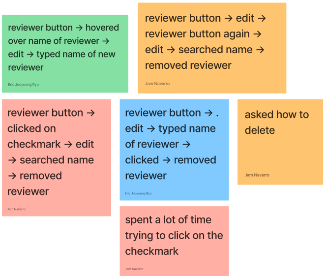
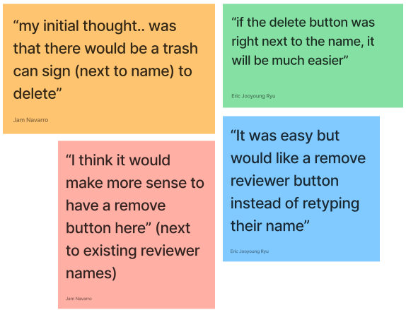

Implementing immersive tech in undergraduate residence halls
University of Iowa H-Lounge Digital Ecosystem
Web-App UI Design • Design-Development Handoff
Timeline
June 2023 - August 2023 Tools
Team
3 Creative Directors 2 Full-Stack Developers
"How might we bring joy in undergraduate student housing?"
PROJECT OVERVIEW
University of Iowa sought to implement a digital activation in the lounge area of
one of their residence and dining halls.
In summer 2023 during my stint as a UI/UX Design Intern with Dimensional Innovations, I had the opportunity to work on the mobile component of an interactive digital experience for a dormitory in
the University of Iowa.
MY ROLE
I worked with one partner for this project. Together, we created a research plan, recruited, conducted, and took notes for user interviews.
My personal work included processing the interview research data through affinity diagramming.
INTERNAL RESEARCH DATA
As a user, I want...
"...to see if [degree] requirements are met."
"...ways to reconcile conflict... and communicate" with advisees.
By learning from the past user feedback in internal secondary research data,
we understood the basic functions of the reviewer dashboard.
We used this research to find what we still needed to discover.
This meant we needed to explore two major persona groups:
Advisees
undergraduate students & individuals planning to and/or currently taking college courses for credit
Advisors
professors, teachers, & those that need to approve a degree roadmap and plan
OUR GOALS
We wanted to understand...
1. How were tasks accomplished in the reviewer dashboard by both students and advisors?
2. What is the usefulness of the feature?
3. Are there pain points that they may come across in navigating the dashboard?
To do this, we found it beneficial to conduct guided usability tests with user interviews to directly see how advisors are currently checking requirements and communicating with advisees.
2. What is the usefulness of the feature?
3. Are there pain points that they may come across in navigating the dashboard?
To do this, we found it beneficial to conduct guided usability tests with user interviews to directly see how advisors are currently checking requirements and communicating with advisees.
USABILITY TESTING
I led two interviews and was primary notetaker for four other interviews conducted with four students
and three advisors. We tailored 8-9 tasks for both groups to discover their process in navigating
the current features of the reviewer dashboard.
SUCCESS METRICS
During the study, we noted specific key performance indicators.
1. How long did it take for the user to finish a task?
2. How many users made an error?
3. How many users could complete the action?
2. How many users made an error?
3. How many users could complete the action?
Qualitative KPIS were gathered from any comments or feedback an interview participant made during the study.
What did they do? What did they feel? What did they say?
Post-study, we gathered each participant's consumer effort score (CES),
net promoter score (NPS), scores on a system usability scale (SUS) by asking them to rate some statements on their
experience.
UNDERSTANDING RESULTS
After compiling the raw interview data, we organized our findings in an affinity diagram.
PATTERN IDENTIFICATION
I identified patterns and insights from our affinity diagramming session.
Advisees

4 out of 4 were confused when asked to locate the reviewer button. ❌

3 out of 4 did not directly find the feature to remove reviewers. ❌
3 out of 4 were unsure about the meaning of the notification bell. ❌

3 out of 4 found the approval status to their plans easily. ✅
Advisors
3 out of 3 easily navigated from the reviewer dashboard to the planning dashboard and vice versa. ✅
2 out of 3 found bugs when viewing and editing an advisee's plans. ❌
4 out of 4 find the buttons on the dashboard to be too small and close together. ❌
4 out of 4 had conflicting preferences for sorting and viewing a list of advisees. ❌
Lessons to learn in reflection
Know the motivations in conducting user research methods
I understand now from personal experience that interviews are a long and complex endeavor. It's good to be able to
explain to yourself and your stakeholders why it's worth spending time and effort on.
Be smart about organizing interviews
The recruitment and interview process took over two 2-week sprints, which was longer than we had initially anticipated.
For future considerations, I know now to always request to interview more people than you expect.
Always justify design decisions!
During this project, my team encouraged me to make sure I back up any solutions I thought of with research. This is a
great skill for me to continue building and learn to move away from making isolated design choices that might not
be great for the users I'm designing for.
Be proactive about next steps
Especially for a startup, it's crucial to know what the team should be able to improve next and make this kind of research
really count in the same way our secondary research really helped our process. My own possible next steps for my role on the
uCredit UX team include in-depth reviewer dashboard wireframing and prototyping, as well as focusing on the interaction
between students and trying to increase the collaboration and community of peers on the platform.
Creating brand graphics for annual university alumni events

Improving advising for undergraduate degree plans